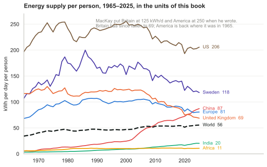
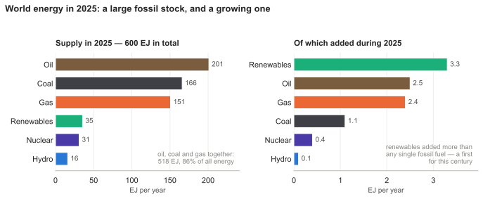
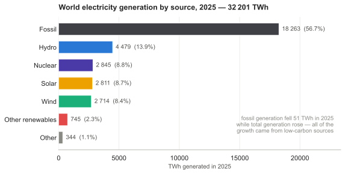
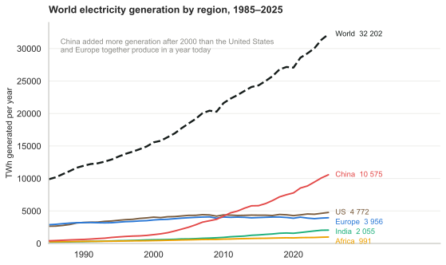
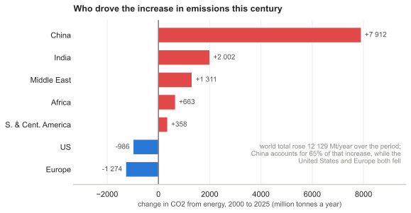

L The world in 2025
A chapter added in the 2026 revision. MacKay wrote in 2008 with 2005 numbers. What follows is the same kind of stock-taking for the most recent complete year, computed from the Energy Institute’s Statistical Review of World Energy — the annual compilation BP published for seventy years, and which the Energy Institute, with Ember, has published since 2023.1
The world used 600.3 EJ of primary energy in 2025, against 592.2 EJ in 2024: a rise of 8.1 EJ, or 1.4%. Divided by 8.09 billion people and by 365 days, that is 55 kWh per day per person averaged over everyone alive.
Before going further, it is worth checking this book’s own arithmetic against the same source, because MacKay built his numbers from the bottom up and the Energy Institute builds them from the top down. He put a British person’s consumption at 125 kWh/d and an American’s at 250. The Energy Institute’s per-capita series gives the United Kingdom 123 kWh/d in 2005, the year his data came from, and puts the American peak at 256 kWh/d in 2000. Two independent methods agreeing to within two per cent is the strongest endorsement of his method in this book, and it was not available to him.

Figure L.1. Energy supply per person, in the units of this book. The dashed line is the world average.
That figure shows eight series because eight is as many as a printed page can carry. The Statistical Review has 103, so the same data is below as something the reader can query directly. It runs DuckDB compiled to WebAssembly, inside the browser: the Parquet file is fetched once and every query after that is executed locally, with nothing sent anywhere. The SQL is editable, so any question this chapter does not answer can be asked of the same numbers.
The query behind the chart — edit and run it
Figure L.1a. Added in this edition. Energy supply per person for any of the 103 countries and regions in the Statistical Review, 1965 to 2025, in kWh per day per person.
Electricity and income
There is a companion to figure L.1 that says something the energy totals do not, and it is worth stating plainly because it cuts against a common reading of this chapter. Plot electricity consumption per person against national income and the two are very tightly related — an r² of about 0.83 across countries.2 High-income countries average around 10 000 kWh per person a year, which is 27 kWh per day in this book’s units; low-income countries average 125 kWh a year, which is 0.34 kWh per day. The gap is a factor of eighty.
What makes the relationship interesting is the absence of exceptions at either end. There is no wealthy country with low electricity consumption: the lowest is Romania at 2 845 kWh per person, and its income is $15 692, only just inside the high-income band. And there is no low-income country above 500 kWh per person. The few apparent outliers — Mozambique, Tajikistan, Iceland — are countries whose consumption is dominated by an energy-intensive export industry such as aluminium smelting, and adjusting for that trade tightens the correlation rather than loosening it.
Figure L.1b. Per-capita electricity demand, from Our World in Data. The map view makes the eightyfold gap geographic.
This is the counterweight to the framing of the whole chapter. Every earlier section has treated growth in energy demand as the problem — the thing outrunning renewables, the reason emissions keep rising. Read against income, most of that growth is people leaving poverty, and there is no historical instance of a country becoming rich while consuming 125 kWh of electricity a year. MacKay’s own position was the same, and he stated it as an engineer would: the question is not whether the poor world’s consumption will rise, because it will and it should, but what it will be supplied with.
What figure L.1 shows is that the world average has risen — from 34 kWh/d in 1965 to 55 — while the rich countries’ averages have fallen. Britain is now at 69 kWh/d, down 44% from the 123 of MacKay’s data. Sweden has fallen from about 200 in the 1980s to 118. America is where it was in 1965. Meanwhile China has gone from 5.7 to 87 kWh/d, a fifteenfold rise that took it past Europe in 2023, and India from 3.3 to 20. Africa, at 11 kWh/d, uses less per person than Britain did in the eighteenth century.
This is close to the central fact about the modern energy system, and it is not the one usually reported: consumption per person in the rich world is falling while total consumption rises anyway, because the number of people consuming at a middle-income rate is rising faster.
But “falling” needs a boundary before it means anything, and the boundary here is the wrong one. These are territorial figures: energy used inside a country’s borders. If a British smelter closes and Britain imports the aluminium instead, British territorial energy falls, Chinese rises, and the aluminium is unchanged. The same applies to the ships that carry it, since fuel burned on international voyages sits outside every national inventory, and the flag a ship flies is a matter of registry rather than of who owns the cargo.
The size of that effect can be measured, because emissions are also published on a consumption basis, which reassigns the carbon embodied in traded goods to whoever finally buys them. In 2023 the United Kingdom emitted 4.5 tonnes of CO2 per person territorially and 7.1 on a consumption basis, 58% more. Sweden’s figures are 3.5 and 5.9, a gap of 68%. Germany’s gap is 29%, America’s 10%. China’s runs the other way: it emits 8.6 tonnes per person and consumes 7.6, because roughly a tenth of what it burns is making things for other people.3
So how much of the rich world’s decline is real? Most of it, but not all. Measured territorially, Britain’s emissions per person fell 57% between 1990 and 2023; measured on consumption, they fell 39%. Germany’s fall goes from 47% to 40%, France’s from 41% to 28%, America’s from 29% to 21%. About a third of Britain’s apparent progress is production that moved rather than stopped. Sweden is the exception that makes the point worth checking rather than assuming: its consumption-based emissions fell further than its territorial ones, 55% against 48%, so its decline is not an offshoring artifact at all.
The energy figures in figure L.1 have no consumption-based equivalent published, so the same correction cannot be applied to them directly. Read them knowing that the rich-country lines would fall less steeply if it could be, and that some part of China’s rise is Europe’s and America’s consumption wearing a different flag.
Where the energy came from
Of the 600.3 EJ, oil supplied 201, coal 166 and gas 151. The three together came to 518 EJ, or 86% of all the energy the world used. Nuclear supplied 31 EJ, hydroelectricity 16, and everything usually meant by “renewables” — wind, solar, biofuels, geothermal and the rest — supplied 35.

Figure L.2. World energy supply in 2025, and where that year’s growth came from. Two panels rather than one: the stock is measured in hundreds of EJ and the flow in single EJ, and a shared scale would make the flow invisible.
Two true statements about the same year
The right-hand panel is where the argument about the energy transition actually lives, and it rewards being read carefully, because two opposite-sounding summaries of 2025 are both correct.
The first: renewables added more new energy than any other single source — 3.2 EJ, against 2.0 for gas, 1.9 for oil and 0.7 for coal. Excepting the financial crash of 2008 and the pandemic year of 2020, this is the first time this century that the largest single contributor to the growth in world energy supply has not been a fossil fuel. That is a real milestone and the Energy Institute leads with it.
The second: fossil fuels still supplied most of the growth. Oil, gas and coal added 4.6 EJ between them, against 3.2 EJ from renewables and 0.3 from nuclear and hydro. Total supply grew 8.1 EJ, and 56% of that was fossil.
Neither statement is spin. They differ in one respect only: whether renewables are compared with each fossil fuel separately or with all three added together. The first comparison tells you which single technology is winning the race to supply new energy; the second tells you whether the system as a whole is decarbonising. In 2025 the answers were “renewables” and “not yet”. A reader given only one of these has had half the arithmetic, and both halves are usually quoted by people who want you to reach opposite conclusions.
The underlying difficulty is the one MacKay spent a whole book on: the base is enormous. Renewables grew 9.9% in 2025, which sounds transformative, but 9.9% of 32 EJ is 3.2 EJ, and world demand grew by 8.1. A large percentage of a small base loses to a small percentage of a large one, and it keeps losing until the base is no longer small.
Electricity is where the change is visible
Electricity is a third of the story and much the fastest-moving third. World generation reached 32 202 TWh in 2025, up 855 TWh or 2.7%, faster than energy supply as a whole — which is what electrification looks like in a statistic.

Figure L.3. World electricity generation by source, 2025.
Here something happened that did not happen in the energy system as a whole: fossil-fired generation fell. It went from 18 314 TWh in 2024 to 18 263 in 2025, a drop of 51 TWh, while total generation rose by 855. Every unit of the growth in the world’s electricity, and a little more besides, came from something other than coal, oil or gas. In the electricity sector alone, and for the first time, the transition is not merely gaining share — it is displacing.
Solar did most of the work. It grew 30% in the year, overtook wind, and now stands at 8.7% of world generation against nuclear’s 8.8% — a share it will almost certainly pass in 2026. Solar and wind together generated 5 525 TWh, more than hydro’s 4 479 and nearly twice nuclear’s 2 845, though still short of those two older low-carbon sources combined. Against MacKay’s chapter 6, where he found Britain’s solar potential real but modest, this is what has changed most since he wrote: not the physics, which is unchanged, but the cost, and so the deployment.
Yet fossil fuels still made 56.7% of the world’s electricity. Even in the sector where the transition is furthest advanced, the incumbent is still the majority, and a 51 TWh decline against an 18 263 TWh base is a beginning, not a trend.
Where the electrifying is happening
One shift is invisible in the generation totals, because it is about what the energy is delivered as rather than where it came from. Asia overtook the West on the share of final energy delivered as electricity in 2016, at a point when its income per head was about a quarter of Western levels, and the gap has widened since: roughly 26% against 21%, with Asian electrification rising about five times faster. The United States has been close to flat on this measure since 1990.
Asia has also been responsible for about three quarters of the growth in world electricity demand since 2000, and holds around 60% of installed solar and wind capacity. The manufacturing is more concentrated still — on Ember’s accounting Asia makes over 95% of solar panels, 85% of batteries and 75% of wind turbines.
This is the one place where the direction of travel is not a Western story at all, and chapters N and 28a give the reason: the region that is electrifying fastest is the one that has to buy its fuel from somewhere else.4
The reason is legible in one column of numbers. Net energy imports as a share of energy use, on the World Bank’s series, with countries outside Asia marked for comparison:
| country | year | net energy imports, % of energy use |
|---|---|---|
| Singapore | 2023 | +280 |
| Japan | 2023 | +87 |
| South Korea | 2023 | +85 |
| Germany * | 2023 | +70 |
| Sri Lanka | 2022 | +60 |
| Cambodia | 2021 | +59 |
| Thailand | 2023 | +58 |
| Philippines | 2022 | +54 |
| France * | 2023 | +47 |
| Bangladesh | 2022 | +44 |
| United Kingdom * | 2023 | +44 |
| Pakistan | 2022 | +40 |
| India | 2023 | +36 |
| Vietnam | 2022 | +34 |
| Nepal | 2022 | +27 |
| China | 2023 | +24 |
| Malaysia | 2022 | −1 |
| United States * | 2023 | −9 |
| Myanmar | 2022 | −19 |
| Laos | 2022 | −49 |
| Russia * | 2022 | −75 |
| Indonesia | 2023 | −90 |
| Kazakhstan * | 2023 | −119 |
| Brunei | 2022 | −173 |
| Australia * | 2023 | −214 |
| Mongolia | 2022 | −226 |
Asterisked rows are outside Asia on the IEA and Ember regional definition used earlier in this section, which places Russia and Kazakhstan in Eurasia rather than Asia. Negative means net exporter.5
Read down the positive half and it is the list of countries electrifying in a hurry. Read down the negative half and the incentive reverses: every kilowatt-hour of domestic solar an exporter builds displaces a barrel it would rather have sold. Indonesia at −90, Brunei at −173 and Mongolia at −226 are in the same region and on the opposite side of the argument, and Russia at −75 is the position taken to its conclusion. That is why this is not simply an Asian story but an importers’ story, and why the same logic puts Japan and South Korea, at +87 and +85, in the same boat as Thailand rather than in the same boat as their neighbours.
Two entries need reading carefully. Singapore’s +280 is not a typo: it imports crude, refines it and bunkers ships, so its imports are nearly three times the energy it actually uses. And the exporters are not uniformly slow — Malaysia and Brunei both deliver a higher share of final energy as electricity than the United States does, and both are named among the economies that have passed it.6 What the trade balance predicts is which countries have a reason to hurry, not what every one of them does.
What China built
The chapter keeps arriving at China from different directions — 65% of the increase in emissions, a fifteenfold rise in energy per person, more than half the world’s coal — so it is worth looking at the thing itself rather than at its share of other people’s totals.
In 1985 China generated 411 TWh of electricity, about a seventh of what the United States generated. In 2025 it generated 10 575 TWh, which is 26 times as much and a third of all the electricity in the world. The comparison that conveys the scale is not the ratio but the increment: China added 9 220 TWh of annual generation after 2000, and the United States and Europe together generate 8 728 TWh in total today. China’s growth alone exceeds the entire present output of the old industrial world, and it accounts for 55% of all the growth in world generation this century.

Figure L.4. Electricity generation by region. The United States and Europe are flat for twenty-five years; the world’s growth is almost entirely the other lines.
The same story is told in a material that this book has not so far mentioned, and it is the one that makes the point unarguable. The United States produced 4.2 gigatonnes of cement in the entire twentieth century, and consumed about 4.4. China produced 4.9 gigatonnes in 2020 and 2021 — two years.7 The widely repeated version of this comparison says three years, and was true when it was coined; China has since got faster, and Hannah Ritchie’s recomputation from the USGS series puts it at two. China now makes about 1.9 of the world’s 4.0 gigatonnes a year, roughly half. Whatever else the last three decades were, they were the largest construction event in the history of the species, and it was mostly one country pouring concrete.
Cement matters here for a reason beyond scale: its emissions are chemistry, not fuel. Making cement means heating limestone until it gives up its carbon dioxide — calcium carbonate becomes calcium oxide, and the CO2 leaves as gas. More than half the carbon dioxide from cement comes from that reaction rather than from the fire underneath, which means it does not appear in any figure headed “CO2 from energy”, and no amount of clean electricity removes it. Cement is about 4.5% of global CO2 emissions on its own. It is one of the few large emissions sources for which decarbonising the power system is simply not the answer.
That is a large hole in the numbers this chapter has been quoting. The Statistical Review counts it separately: industrial-process and methane emissions came to 4 902 Mt of CO2-equivalent worldwide in 2025, against the 35 806 Mt from energy — so the categories the energy figures exclude are about 12% again on top, and the combined total is near 41 000 Mt. China’s share of that excluded category is 1 309 Mt, 27% of the world’s, up from 213 Mt in 1990: a sixfold rise, steeper than its rise in energy emissions.
And what China says it will do next
In July 2026 China published its 15th Five-Year Plan for National Response to Climate Change, covering 2026 to 2030, coordinated by the Ministry of Ecology and Environment with eighteen other departments. The striking thing about it is how little it contains: no new target for renewable capacity, none for non-fossil share, none for coal. It consolidates and restates what was already promised — peak emissions before 2030, carbon neutrality before 2060, and emissions 7 to 10% below the peak by 2035.
The one new headline number is a 17% cut in carbon intensity across the five years, with a 3% cut in intensity per unit of product for the industries inside the national carbon market, and a non-CO2 “reduction capacity” of 30 MtCO2e by 2030.
An intensity target is not an emissions target, and this book’s habit is to ask what the difference amounts to. Carbon intensity is emissions divided by output, so emissions fall only if intensity falls faster than output rises. Over five years a 17% intensity cut multiplies emissions by 0.83; growth at g multiplies them by (1+g)⁵. Setting the product to one gives the growth rate at which the target delivers flat emissions:
3.8% a year.
Above that, emissions rise while the target is met. At 4.5% growth they rise about 3%; at 5%, about 6%. Below it they fall — at 3% growth, by nearly 4%. So the plan is compatible with Chinese emissions rising through 2030 and with them falling, and which one happens is decided by the growth rate rather than by the climate target.8
That is not a criticism of the plan so much as a description of what an intensity target is, and China has never disguised the point: the binding commitment is the peak, and the peak is a date rather than a number. What this chapter can add is the arithmetic that turns one into the other, and the observation that a target of this shape leaves the interesting question — whether the peak is behind or ahead — to be settled by growth and by how fast non-fossil generation is added, neither of which the plan sets a number for.
Emissions, and three different questions
Carbon dioxide from energy rose 1.1% in 2025, to 35 806 million tonnes. The OECD countries emitted 11 161 Mt, 31.2% of the total; the non-OECD countries 24 645 Mt, 68.8%.
Arguments about who is responsible go wrong by switching between questions that have different answers, so it is worth separating them. Who emits most now? China, at 11 220 Mt, about 2.4 times the United States’ 4 755. Who emits most per person? Not China: an American emits roughly 14 tonnes a year against a Chinese citizen’s 8.7. Who put most of it there? The industrialised countries, by a wide margin, since carbon dioxide persists for centuries and they burned first.
Figure L.5. Share of cumulative carbon dioxide emissions, from Our World in Data — the third question drawn. Because carbon dioxide persists for centuries, this is the stock rather than the flow, and it is the chart the historical-responsibility argument rests on. Note that a country’s share here can fall while its emissions rise, since the denominator is everyone’s cumulative total.
And a fourth, which is the one most often conflated with the others: who is driving the increase?

Figure L.6. The change in energy-related carbon dioxide emissions by region, 2000 to 2025. Note that two regions have negative bars.
Since 2000 world emissions have risen 12 129 Mt a year. China accounts for 7 912 Mt of that, 65% of the global increase, and India for a further 2 002 Mt. Over the same quarter-century United States emissions fell by 986 Mt a year and Europe’s by 1 274 — declines that were more than cancelled by growth elsewhere. So the answer to the fourth question is China, and it is not close.9
There is a fifth question hiding underneath the other four, and it is about the boundary rather than the denominator: what counts as an emission? Every number above is carbon dioxide from energy. It excludes cement chemistry, agriculture, and — most consequentially — whether a country’s land absorbs carbon or releases it. Sweden makes the point sharply. On the Statistical Review’s energy basis Sweden emitted 39.4 Mt of CO₂ in 2025. On its own national inventory, which counts the whole economy and includes the forest sink, Sweden’s 2024 figures were 47 Mt emitted against 54 Mt absorbed: net −7 Mt, the only country in the European Union whose balance is negative.10 That is about −0.7 tonnes for each of Sweden’s 10.6 million people.
Sweden’s own environment agency says there are three ways to count, not two, and the third is the one that changes the picture. Alongside territorial emissions — the main measure, everything inside the borders, the basis the climate targets are set against — it publishes production-based emissions, meaning everything Swedish firms and residents emit wherever in the world they emit it, and consumption-based emissions, meaning everything emitted anywhere to supply what Sweden consumes. On the last of those the Swedish figure for 2023 is 7.6 tonnes per person, counting all greenhouse gases in CO2-equivalent. The United Kingdom’s, on the same basis and in the same year, is 10 tonnes per person, of which 53% is emitted abroad.11
Those are not the consumption figures given earlier in this chapter, and the difference is instructive. The 5.9 tonnes for Sweden and 7.1 for the United Kingdom quoted above are carbon dioxide alone; 7.6 and 10 are every greenhouse gas expressed as CO2-equivalent. Two things have changed at once. The larger pair is different work — Naturvårdsverket’s and Defra’s own input-output models over their national accounts, rather than the Global Carbon Budget — and it counts every greenhouse gas rather than carbon dioxide alone. The second of those is the change this section is about: methane and nitrous oxide have been let inside the fence. It is also one of the three controls on the explorer at the end of this section, which opens on all greenhouse gases; moving that control to carbon dioxide drops every line on the chart — by about a fifth for the United Kingdom, the United States and the EU-27, a quarter for India, an eighth for China — and it is the quickest demonstration in the chapter that a number can move that far without anybody being wrong. What no control will do is turn one pair into the other, because the change of model is not on the panel.
So the same country is −0.7 tonnes a person and 7.6 tonnes a person, a year apart, out of the same agency’s published statistics. Every number is correct. They are answers to different questions, and a country can be a positive emitter, a net absorber and a substantial importer of other people’s emissions all at once without any contradiction at all. What the boundary is drawn around decides which of those a reader is told about, and it is chosen before any measurement takes place.
Rather than take any of that on trust, much of the same data is below as Our World in Data’s emissions explorer, which is the rare interactive that lets a reader change the thing being argued about. Its Accounting control switches between territorial and consumption-based, but only while carbon dioxide is the gas selected; Gas or warming switches between carbon dioxide and all greenhouse gases in CO2-equivalent, which is what brings methane and nitrous oxide back inside the fence — cement is already inside it, because the explorer’s carbon dioxide series counts industrial process emissions alongside fuel; and Count switches between national totals and per person. Most of this section can be checked, or broken, by moving those three controls, but not all of it. The −0.7 tonne net balance and the 7.6 and 10 tonne consumption footprints are national inventory and input-output work that no global dataset carries, and the 39.4 Mt energy figure is narrower than anything the explorer holds — fuel alone, where the explorer’s carbon dioxide counts process emissions as well — besides being a 2025 number, past where these series stop. The net balance is the one most likely to mislead. Set the panel to all greenhouse gases, territorial, per person and add Sweden, and it reads about +5.4 tonnes, not −0.7, because the global series puts Swedish land use on the emitting side of the ledger where the national inventory finds a sink large enough to carry the whole country negative. That disagreement is about forests rather than about arithmetic.
Figure L.6a. Greenhouse-gas emissions for China, the United States, India, the United Kingdom and the EU-27, from Our World in Data. Opens on all greenhouse gases, territorial, by country. Accounting is greyed out in that state; move Gas or warming to carbon dioxide to release it, then switch Accounting to consumption-based and watch the British and European lines rise and the Chinese line fall — the trade correction of the earlier section, drawn rather than described.
All four answers are true at once, and each is a different question. The atmosphere responds only to the total, which is why an argument that answers one question with another’s answer is not an argument. MacKay’s rule is the way through: state the quantity, state the denominator, then argue.
Did efficiency improve, or was it a mild winter?
There is a trap in every one of these year-on-year comparisons. Energy consumption depends heavily on the weather: a cold winter raises heating demand and makes a country look less efficient than it is, and a mild one flatters it. Comparing raw consumption between years measures the weather as much as the economy.
The European instrument for separating the two is ODEX, the energy-efficiency index of the EU-funded ODYSSEE-MURE project, coordinated by Enerdata and published as an indicator by the European Environment Agency.12 Its indicators are climate-corrected, so that year-to-year variation is independent of how cold the winter was, and it is a longitudinal index rather than a level: a sector starts at 100 in a base year and falls as it becomes more efficient. That is the right instrument for the question this chapter keeps running into, which is whether a fall in consumption is a real gain or just a warm year.
Across the EU, ODEX improved 1.4% a year between 2010 and 2023, 16% in total. The sectoral detail matters more than the average. Households, industry and services all improved at about 1.6% a year over that period and then accelerated after 2019, to 2.4%, 2.4% and 2.2% respectively. Transport is the laggard, at 0.9% a year and 11% in total over thirteen years — which is what one would expect of a sector whose efficiency depends on replacing a vehicle fleet that lasts fifteen years. EU final energy consumption in 2023 was 868 Mtoe, the lowest since 2000, falling at 1.6% a year since 2018.
Sweden is worth reading beside it, because it is the case the companion model is built around.13 Swedish ODEX improved 1.12% a year between 2000 and 2023, 25.8% in total — a longer window than the EU figures above, so the annual rates are not directly comparable, but the total is the more meaningful number anyway. Residential and services did best at over 1.6% a year, 31% in total; transport managed 0.8% a year; industry 1.2% a year overall, but with little progress since 2006, which is a long plateau for the sector that consumes most of Sweden’s electricity. Final energy consumption fell from 32.2 Mtoe in 2000 to 29.6 in 2023, with industry down 1.0 Mtoe and transport 0.8, while services rose 0.35.
Three things follow. Efficiency is improving steadily and unspectacularly, at one to two per cent a year — and figure L.1 shows what that compounds to over decades, which is Britain’s 44% fall. That rate is close to the rate at which world energy demand has been growing, which is why the two have largely cancelled in the global total even as they diverge sharply by country. And the sector that has stalled in Sweden, industry, is precisely the one the electrification argument depends on: an efficiency index that has not moved since 2006 is a different problem from a price signal that never arrives, and the two are easily mistaken for each other.
A caution about area per person
Chapter J’s tables invite a particular argument, so it is worth stating what they can and cannot support. Land area per person says nothing on its own about how many people a country can feed or power, because a square metre is not the same everywhere. A square metre at 60°N receives roughly half the annual sunlight of one at 20°N, and grows correspondingly less. Sweden’s 42 600 m² per person and Nigeria’s 4 050 are not comparable quantities, and a table of densities that ignores latitude will mislead in whichever direction the reader was already inclined.
The argument is made in Sweden in exactly this form — that the country is the most densely populated in the world for its latitude, and has therefore already exceeded what its own sunlight can support.14 The observation about insolation is sound and is MacKay’s own point in chapters 6 and 13: northern countries have less solar resource per square metre, and a country’s renewable potential scales with its area times its insolation, not its area alone. What does not follow is the policy conclusion usually attached, that the population should therefore be reduced. That inference skips the trade that has existed for as long as agriculture, treats consumption per person as fixed when this book’s whole method is to ask how far it can be lowered — and figure L.1 shows Sweden’s own falling by 40% while nobody left — and rests on no published carrying-capacity estimate. The physics is worth keeping. The conclusion is not a physical result and should not be presented as one.
China makes the argument concrete, because one country contains both cases. A 2026 study of Chinese utility-scale solar gives fixed-tilt farms 132 W/m2 of peak capacity per square metre of site in South China against 58 in the Northeast — a factor of 2.3 in how densely the panels may stand, before any difference in how much sun falls on them, because row spacing is set by the lowest sun angle the design has to tolerate and that is a function of latitude. A square metre of Chinese territory is worth more than twice as much in Guangdong as in Heilongjiang for this purpose, and the map of China’s population does not follow the map of its solar resource.
The land totals belong beside chapter J’s tables. Under the study’s 2060 scenario, in which utility-scale solar supplies 37.5% of Chinese electricity and generates 6 PWh a year, the footprint runs between roughly 37 000 and 50 000 km2 according to how much tracking gets built — 0.4 to 0.5% of China’s land area, or 26 to 35 m2 per person. Chapter J gives a Nigerian 4 050 m2 of national territory and a Swede 42 600. Supplying well over a third of the electricity of the country that uses a third of the world’s costs China under one per cent of itself.
That is not an argument that land is unconstrained, and the study is the wrong one to cite for it: its entire finding is that land prices are already deciding which technology China builds. What the two numbers together establish is the shape of the constraint. It is competition for particular land, near particular people, at particular prices — not a shortage of area.15
Statistical Review of World Energy, Energy Institute with Ember, KPMG and Kearney, 2026 edition, published 30 June 2026, covering 2025: https://www.energyinst.org/statistical-review. Supply, generation and emissions figures in this section are from that edition. All figures in this section are computed from the Statistical Review’s consolidated workbook by the
chapterJstep of this edition’s data pipeline, not transcribed from the report’s text. One trap in that workbook is worth recording for anyone repeating the exercise: on the fuel sheets each block of columns repeats, and the year label sits at the end of its block, not the start, so the obvious reading has 2024 and 2025 the wrong way round.↩︎Todd Moss, “Killer graphic shows why high income requires lots of energy”, Eating Policy: https://toddmoss.substack.com/p/killer-graphic-shows-why-high-income, plotting the Our World in Data trade-adjusted electricity-demand dataset. The underlying series is at https://ourworldindata.org/grapher/per-capita-electricity-demand. Note the unit change: this section is electricity per person, where the rest of the chapter is total energy per person, and the two differ by roughly the factor by which primary energy exceeds electricity.↩︎
Consumption-based emissions reassign the carbon embodied in traded goods from producer to consumer. Data from the Global Carbon Project via Our World in Data: https://ourworldindata.org/grapher/consumption-co2-per-capita beside https://ourworldindata.org/grapher/co-emissions-per-capita, both for 2023, the latest year with both series. International shipping and aviation fuel is reported separately as “bunkers” and is in neither national total, which is a second boundary problem and one no reassignment fixes.↩︎
Ember, Electric Asia: How Asia is leading the electric age, 11 June 2026. The figures, and the cautions that go with them — that Ember advocates for electrification, that its “Asia” excludes Russia, that the “share of Asia” percentages have an unstated denominator, and that the resource multiple is a technical potential rather than a forecast — are set out in full in the corresponding note to chapter N.↩︎
Net energy imports as a percentage of energy use, from the World Bank’s World Development Indicators (series EG.IMP.CONS.ZS), which draws on IEA and UN energy statistics; assembled by the
energyImportsstep in this edition’s data-refresh script. Net imports are energy use less production, both in oil equivalents, so a negative figure is a net exporter. A figure above 100 looks impossible on that definition and is not: the indicator’s energy use excludes fuel supplied to ships and aircraft in international transport, while the import side includes it, so a refining and bunkering hub can import far more than it is recorded as using. That is the Singapore case, and it is a quirk of the boundary rather than a measure of dependence. Two cautions. Countries stop reporting in different years, so each row is that country’s own latest and the table mixes 2021, 2022 and 2023; the ranking is robust to that but small differences between adjacent rows are not. And the indicator is measured on primary energy, which counts a joule of imported coal against a joule of domestic hydro without regard to what either delivers — it is a measure of dependence, not of how well an energy system works. Taiwan is absent because it is not in the World Bank series.↩︎Ember, Electric Asia: How Asia is leading the electric age, 11 June 2026. The figures, and the cautions that go with them — that Ember advocates for electrification, that its “Asia” excludes Russia, that the “share of Asia” percentages have an unstated denominator, and that the resource multiple is a technical potential rather than a forecast — are set out in full in the corresponding note to chapter N.↩︎
Hannah Ritchie, “China vs the US: cement”, Sustainability by Numbers: https://hannahritchie.substack.com/p/china-us-cement, recomputing from the US Geological Survey series — US production of 4.2 Gt over 1900–1999 against Chinese production of 2.4 Gt in 2020 and 2.5 Gt in 2021. She notes that Chinese production and consumption are near enough the same, since exports run around 5 Mt a year. The three-year version of the comparison, drawn from USGS data and popularised by Bill Gates, is in the Washington Post’s “How China used more cement in 3 years than the U.S. did in the entire 20th Century”, 24 March 2015; it used 2011–2013, and the interval has shortened since. The 4.5% share of global CO2 is hers. World production of about 4.0 Gt in 2024 with China at 1.9 Gt is USGS. Process and methane emissions are from the Statistical Review workbook’s “CO2-Process Emissions, Methane” sheet, which is a separate series from the CO2-from-energy figures used elsewhere in this section.↩︎
The 15th Five-Year Plan for National Response to Climate Change, covering 2026–2030, was released in late July 2026 by the Ministry of Ecology and Environment together with eighteen other departments; this account follows Lekai Liu, “Q&A: What is in China’s new five-year plan for climate change?”, Carbon Brief, 6 August 2026, https://www.carbonbrief.org/qa-what-is-in-chinas-new-five-year-plan-for-climate-change. The targets quoted are the plan’s: a 17% reduction in carbon intensity over the period, a 3% reduction in intensity per unit of product for sectors inside the national emissions trading scheme, and a non-CO2 greenhouse-gas “reduction capacity” of 30 MtCO2e by 2030 — a phrase whose baseline the document does not make clear, and which this edition therefore quotes rather than interprets. For scale on that last figure, a methodology note for the Chinese offset scheme covering coal-mine methane and ventilation-air methane projects estimates that such projects can at present generate annual emission reductions of approximately 4.5 MtCO2e, as reported in the same Carbon Brief piece — so the 30 Mt is several times the abatement one established route delivers now, which is what makes it worth quoting even undefined. The break-even growth rate is this book’s arithmetic, not the plan’s: 0.83 × (1+g)⁵ = 1 gives g = 3.80%. Two cautions on it. Chinese carbon intensity is defined against GDP, so the calculation inherits every difficulty in that measure, and a target met on official GDP need not correspond to a physical quantity of carbon. And an intensity target says nothing about which emissions — a fall driven by services growing faster than industry is not the same event as a fall driven by displacing coal, though the two look identical in the ratio.↩︎
The framing of this section — that “who emits most”, “who emits most per person”, “who put most of it there” and “who is driving the increase” are four different questions with four different answers — follows Robert Rapier, “Yes, China Is Largely Responsible For Rising Carbon Emissions”, Forbes, 24 June 2026: https://www.forbes.com/sites/rrapier/2026/06/24/yes-china-is-largely-responsible-for-rising-carbon-emissions/. The numbers here are computed from the Statistical Review workbook rather than taken from that article, and differ slightly from it: measuring from 2000 gives China 65% of the global increase where he reports about 62%, the difference being the base year.↩︎
Sweden’s net-negative balance: Daniel Mellwing, “Svenska succén – ensamt om minusutsläpp i Europa”, Tidningen Näringslivet, 8 June 2026: https://www.tn.se/hallbarhet/48138/svenska-succen-ensamt-om-minusutslapp-i-europa-speciellt/, reporting figures from Naturvårdsverket, SCB, SLU, Skogsstyrelsen and Eurostat, with Johanna Jeansson of Kunskapsverket quoted to the effect that Sweden is in practice alone among EU countries in meeting net-zero. The 39.4 Mt energy-only figure beside it is from the Statistical Review workbook, so the two are on deliberately different bases: whole-economy including land use, against carbon dioxide from energy alone. The three accounting bases are Naturvårdsverket’s own framing, from Tre sätt att beräkna klimatpåverkande utsläpp, https://www.naturvardsverket.se/amnesomraden/klimatomstallningen/sveriges-klimatarbete/tre-satt-att-berakna-klimatpaverkande-utslapp/, reviewed 8 July 2026, which sets out territorial emissions as the “huvudsakligt mått” used to follow up the UN, EU and national targets, and production-based and consumption-based emissions as “kompletterande mått” — the first covering “utsläpp från svenska företag och personer som skett både utanför och innanför Sveriges gränser” on the national-accounts boundary, the second “utsläpp som tar hänsyn till klimatpåverkan som svensk konsumtion orsakar i Sverige och andra länder”. The 7.6 tonnes is the agency’s consumption-based figure for 2023, down about 36% per person since 2008, of which roughly 60% is household consumption and 40% public consumption and investment. The UK comparison is Carbon footprint for the UK and England to 2023, Defra: a footprint of 699 MtCO2e, 10 tonnes per person, 53% of it emitted overseas, down 37% per person from the 2004 peak of 16 tonnes. Four cautions. The two consumption figures here are on a different gas basis from the 5.9 and 7.1 given earlier in this chapter, which are carbon dioxide only from the Global Carbon Budget by way of Our World in Data; 7.6 and 10 are all greenhouse gases in CO2-equivalent, which is why they are larger. The explorer below reproduces the smaller pair and cannot reproduce the larger one, which is worth more than an instruction. It opens on all greenhouse gases, territorial, as national totals, with Sweden not among the five countries plotted. While all greenhouse gases are selected the consumption-based option under Accounting is greyed out and will not take, even if it is written into the address: Our World in Data has no consumption-based series for all greenhouse gases, because its consumption figures come from the Global Carbon Budget, which adjusts for trade in carbon dioxide only, while its all-gas series comes from Jones et al. So Gas or warming has to go to carbon dioxide first, which releases Accounting; set that to consumption-based, add Sweden, set Count to per person, and the Swedish and British lines end in 2023 — there is no 2024 consumption value — at 5.9 and 7.1 respectively. Releasing Accounting is not the same as moving it: left on territorial, Sweden and the United Kingdom read 3.5 and 4.5 instead, which is the other pair given earlier in this chapter. The larger pair is not in that dataset at all. It exists because Naturvårdsverket and Defra each run an input-output model over their own national accounts covering every gas, which no global compilation has done for every country. The explorer stopping where it does is this section’s argument arriving from another direction: the wider the boundary, the fewer the statistical agencies that can afford to draw it. The territorial net figure is 2024 and the consumption figures are 2023, so the two per-person numbers in the text are a year apart; nothing in the comparison turns on that, but they are not the same year. Consumption-based emissions are modelled rather than measured, which the agency says plainly, and the uncertainty grows as the figures are broken down. And Naturvårdsverket notes that its own model understates international aviation, because it counts only fuel uplifted in Sweden for flights leaving the country, misses connecting flights, and excludes high-altitude effects — so 7.6 tonnes is a floor rather than a central estimate.↩︎
Sweden’s net-negative balance: Daniel Mellwing, “Svenska succén – ensamt om minusutsläpp i Europa”, Tidningen Näringslivet, 8 June 2026: https://www.tn.se/hallbarhet/48138/svenska-succen-ensamt-om-minusutslapp-i-europa-speciellt/, reporting figures from Naturvårdsverket, SCB, SLU, Skogsstyrelsen and Eurostat, with Johanna Jeansson of Kunskapsverket quoted to the effect that Sweden is in practice alone among EU countries in meeting net-zero. The 39.4 Mt energy-only figure beside it is from the Statistical Review workbook, so the two are on deliberately different bases: whole-economy including land use, against carbon dioxide from energy alone. The three accounting bases are Naturvårdsverket’s own framing, from Tre sätt att beräkna klimatpåverkande utsläpp, https://www.naturvardsverket.se/amnesomraden/klimatomstallningen/sveriges-klimatarbete/tre-satt-att-berakna-klimatpaverkande-utslapp/, reviewed 8 July 2026, which sets out territorial emissions as the “huvudsakligt mått” used to follow up the UN, EU and national targets, and production-based and consumption-based emissions as “kompletterande mått” — the first covering “utsläpp från svenska företag och personer som skett både utanför och innanför Sveriges gränser” on the national-accounts boundary, the second “utsläpp som tar hänsyn till klimatpåverkan som svensk konsumtion orsakar i Sverige och andra länder”. The 7.6 tonnes is the agency’s consumption-based figure for 2023, down about 36% per person since 2008, of which roughly 60% is household consumption and 40% public consumption and investment. The UK comparison is Carbon footprint for the UK and England to 2023, Defra: a footprint of 699 MtCO2e, 10 tonnes per person, 53% of it emitted overseas, down 37% per person from the 2004 peak of 16 tonnes. Four cautions. The two consumption figures here are on a different gas basis from the 5.9 and 7.1 given earlier in this chapter, which are carbon dioxide only from the Global Carbon Budget by way of Our World in Data; 7.6 and 10 are all greenhouse gases in CO2-equivalent, which is why they are larger. The explorer below reproduces the smaller pair and cannot reproduce the larger one, which is worth more than an instruction. It opens on all greenhouse gases, territorial, as national totals, with Sweden not among the five countries plotted. While all greenhouse gases are selected the consumption-based option under Accounting is greyed out and will not take, even if it is written into the address: Our World in Data has no consumption-based series for all greenhouse gases, because its consumption figures come from the Global Carbon Budget, which adjusts for trade in carbon dioxide only, while its all-gas series comes from Jones et al. So Gas or warming has to go to carbon dioxide first, which releases Accounting; set that to consumption-based, add Sweden, set Count to per person, and the Swedish and British lines end in 2023 — there is no 2024 consumption value — at 5.9 and 7.1 respectively. Releasing Accounting is not the same as moving it: left on territorial, Sweden and the United Kingdom read 3.5 and 4.5 instead, which is the other pair given earlier in this chapter. The larger pair is not in that dataset at all. It exists because Naturvårdsverket and Defra each run an input-output model over their own national accounts covering every gas, which no global compilation has done for every country. The explorer stopping where it does is this section’s argument arriving from another direction: the wider the boundary, the fewer the statistical agencies that can afford to draw it. The territorial net figure is 2024 and the consumption figures are 2023, so the two per-person numbers in the text are a year apart; nothing in the comparison turns on that, but they are not the same year. Consumption-based emissions are modelled rather than measured, which the agency says plainly, and the uncertainty grows as the figures are broken down. And Naturvårdsverket notes that its own model understates international aviation, because it counts only fuel uplifted in Sweden for flights leaving the country, misses connecting flights, and excludes high-altitude effects — so 7.6 tonnes is a floor rather than a central estimate.↩︎
ODEX and the ODYSSEE-MURE project: https://www.odyssee-mure.eu/publications/other/odex-indicators-database-definition.html; the European Environment Agency publishes the EU-27 series at https://www.eea.europa.eu/data-and-maps/figures/odyssee-energy-efficiency-index-odex-1.↩︎
Country profiles from ODYSSEE-MURE: the European Union at https://www.odyssee-mure.eu/publications/efficiency-trends-policies-profiles/european-union.html and Sweden at https://www.odyssee-mure.eu/publications/efficiency-trends-policies-profiles/sweden.html. The project also maintains a searchable database of the policy measures behind these numbers at https://www.measures.odyssee-mure.eu/energy-efficiency-policies-database.html. Note that the EU figures quoted here run from 2010 and the Swedish ones from 2000, so the annual rates are not like for like.↩︎
The Swedish statement of the latitude argument is Lars Wilderäng, “Är Sverige överbefolkat?”, Cornucopia?, February 2015: https://cornucopia.se/2015/02/ar-sverige-overbefolkat/. It is a blog essay arguing a policy position, not a study, and it cites no carrying-capacity calculation; it is given here as the popular form of the argument rather than as evidence for it.↩︎
Shi Chen, Xi Lu, Edgar Virgüez, Jiming Hao, Ken Caldeira and Steven J. Davis, “The effect of land costs on the economic and sustainability performance of solar photovoltaics in China”, PNAS 123 (8) e2512930123 (2026), https://doi.org/10.1073/pnas.2512930123. Regional power densities are the paper’s, in peak direct-current capacity per square metre of site under China’s Code for Design of Photovoltaic (PV) Power Stations. The land totals are this edition’s arithmetic on the paper’s figures and should be treated as an order of magnitude. The paper reports that moving from its increasing-land-cost scenario to its decreasing-cost scenario would “expand land use by 35% or 12.9 thousand km2”, from which the two scenarios come out near 37 000 and 50 000 km2; the paper does not print either total. One number does not reconcile and is left visible rather than smoothed. The two scenarios generate the same electricity over different areas — the paper’s abstract gives the capacity saving “under the same electricity output”, against a 6 PWh target in 2060 — so they imply a range rather than a point: 6 PWh is 6.85 × 1011 W averaged over a year, which is 18.5 W/m2 over 37 000 km2 and 13.7 over 50 000. Only the upper end sits above the roughly 15 W/m2 the paper’s own national fixed-tilt averages give; the lower end is what a mix of fixed-tilt at 14.6 and tracking at 8.6 would produce and needs no explaining. For the upper end the likely cause is a scenario weighted towards the high-irradiance Northwest, but this edition has not reproduced the scenario and cannot confirm it, so the totals are quoted to two significant figures and no further. Per-person figures use a Chinese population of 1.41 billion and a land area of 9.6 million km2. Chapter 6 sets the same power densities against Cleve Hill in Kent and gives the fuller set of cautions.↩︎